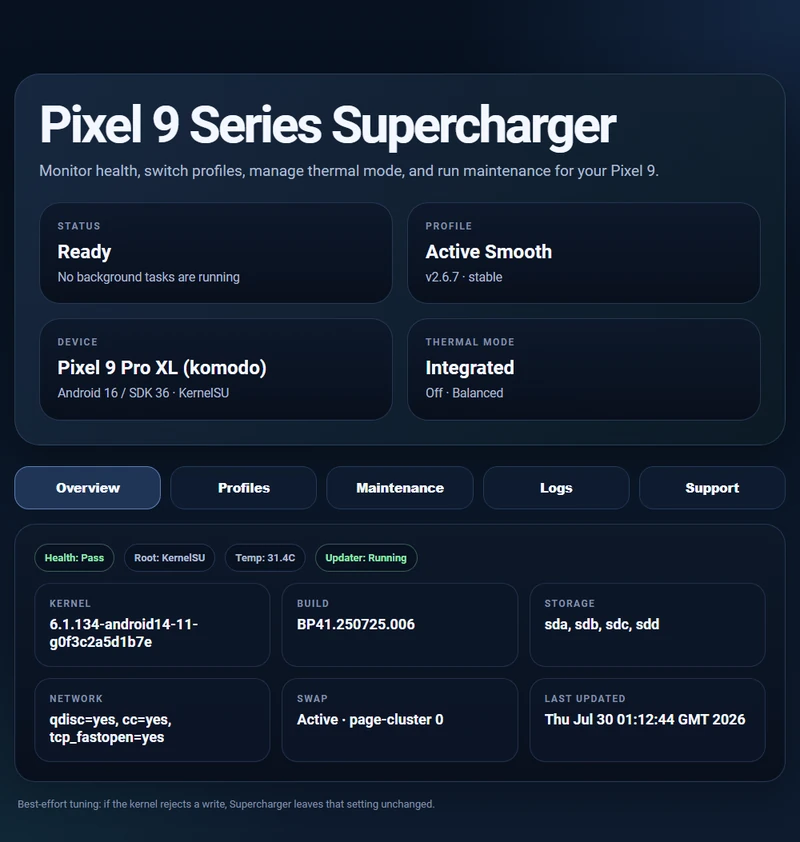
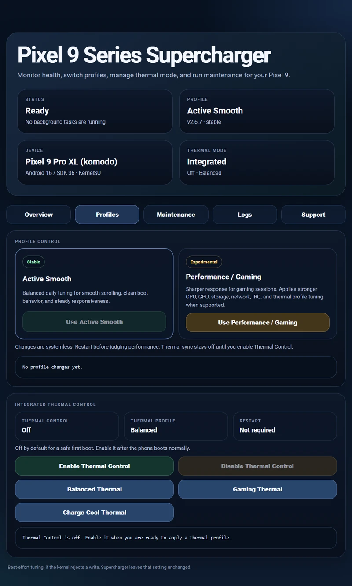
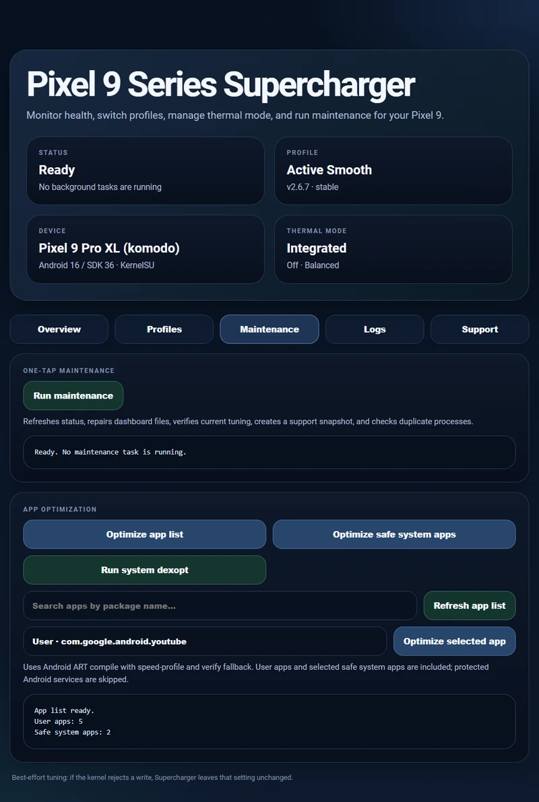

Conservative by design
Best-effort tuning with graceful fallbacks. No forced clocks in the stable profile.
Thoughtful performance tuning for the Pixel 9 series. Systemless, transparent, and always in your control.
Best-effort tuning with graceful fallbacks. No forced clocks in the stable profile.
Thermal Control starts off. Enable it yourself after confirming a clean boot.
Manage profiles, maintenance, optimization, and logs from the WebUI.
Profiles, maintenance, and diagnostics. All in one dashboard.

Enlarge preview
Enlarge preview
Enlarge previewFor everyday use, with conservative tuning focused on consistent responsiveness. The stable profile does not force CPU or GPU clocks.
For gaming sessions and heavier foreground workloads. Uses additional GPU tuning where supported; rejected settings are left unchanged.
Reboot after switching. Results depend on your device and kernel; performance gains are not guaranteed.
| Device | Codename |
|---|---|
| Pixel 9 | tokay |
| Pixel 9 Pro | caiman |
| Pixel 9 Pro XL | komodo |
| Pixel 9 Pro Fold | comet |
Check your setup · Verify a ZIP locally
Thermal Control on KernelSU / APatch 3.x requires an overlay-capable metamodule. Read the requirements
Download the ZIP and its SHA-256 file to check integrity. How to verify
Thermal Control stays off until you enable it.
Reboot after changing profiles.
Yes. You need a supported Pixel 9 device, an unlocked bootloader, and Magisk, KernelSU, or APatch. Magisk installations require version 30.7 or newer. Check the compatibility requirements before downloading.
After installing and rebooting, find Supercharger in your root manager and open its WebUI. Your root manager or companion app must support module WebUIs. If the entry is missing, check your manager's WebUI support.
It is off by default so you can first confirm a normal boot. Enable it from Profiles in the WebUI, then reboot. KernelSU / APatch 3.x also requires an overlay-capable metamodule such as meta-overlayfs or meta-magicmount; Supercharger does not bundle one.
Download the module ZIP and its matching SHA-256 file. Compare the ZIP's SHA-256 hash with the value in that file. Run the command from the folder containing the ZIP and checksum. In PowerShell, compare the returned hash with the SHA-256 file:
Get-FileHash -Algorithm SHA256 .\Pixel-9-Series-Supercharger-v2.6.7.zipOn Linux, put both files in the same folder and run:
sha256sum -c Pixel-9-Series-Supercharger-v2.6.7.zip.sha256A matching hash confirms file integrity. If it does not match, download the files again before installing.
Flash a newer module ZIP over the installed version and reboot; your selected performance and thermal profiles are preserved. To uninstall, remove Supercharger from your root manager and reboot. Uninstall clears Supercharger's saved state.
Read the troubleshooting guide. For a bug report, run maintenance in the WebUI, then load the support snapshot from the Support tab and attach it to your report.
{kind=link}
{kind=link}
{kind=link}